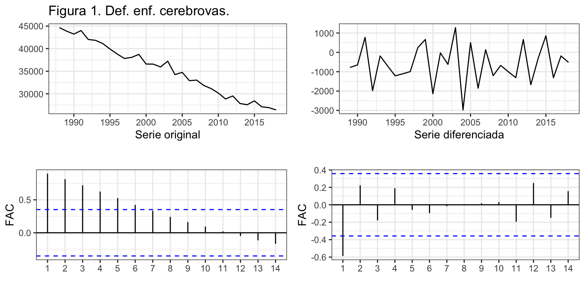
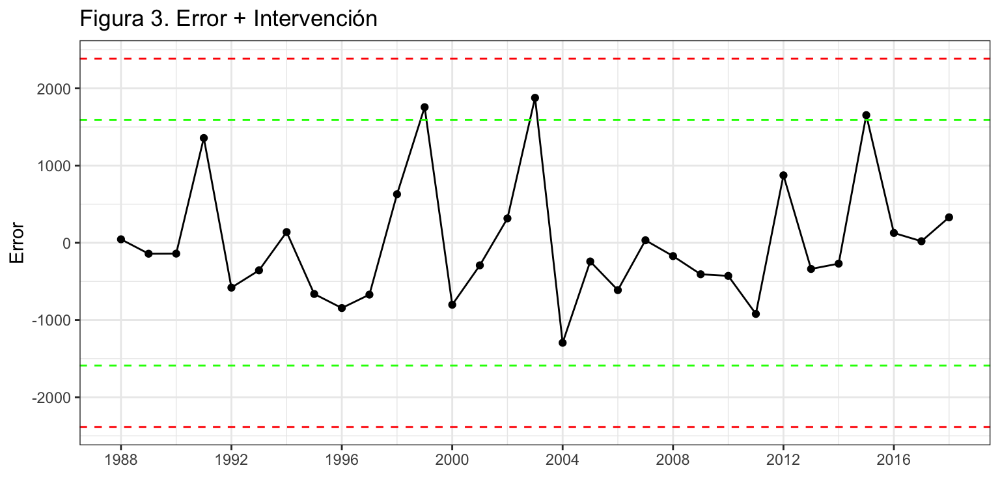
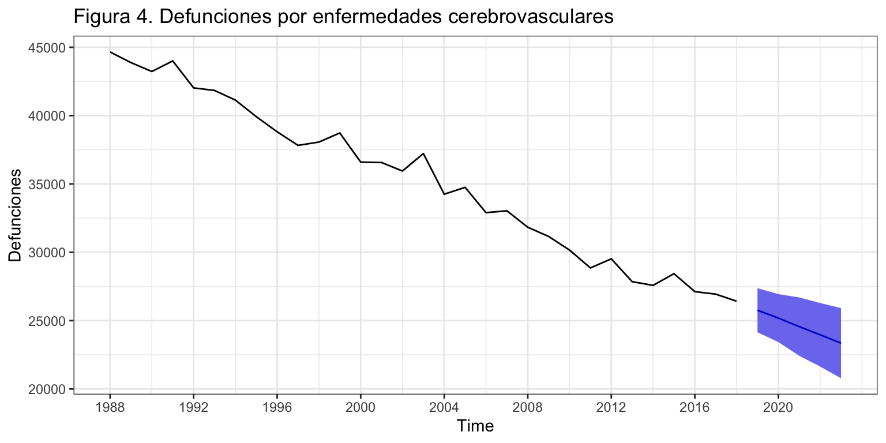
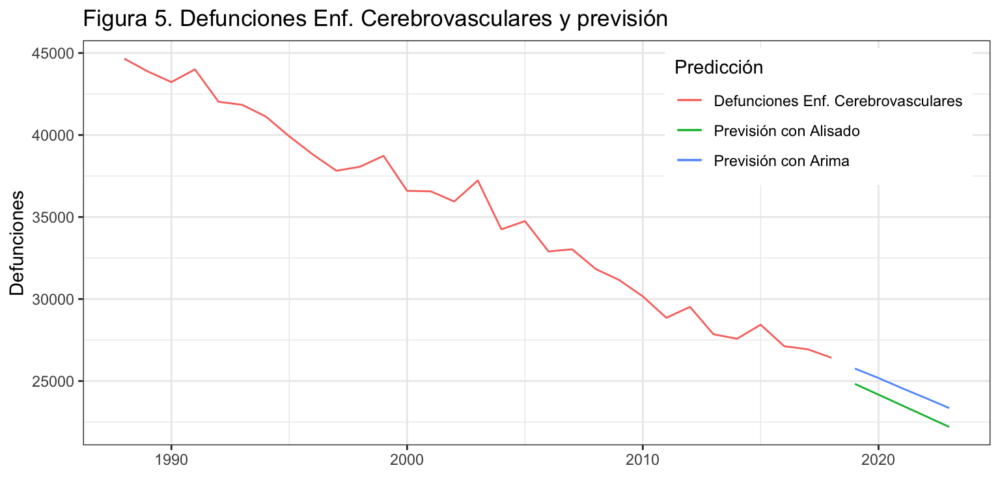

Ejemplo de aplicación: Defunciones por Enfermedades Cerebrovasculares (continuación).
Introducción
Consideremos de nuevo la serie temporal correspondiente al número de defunciones causadas por enfermedades cerebrovasculares, Esta serie está disponible en el Instituto Nacional de Estadística desde enero de 1980 hasta diciembre de 2018, un total de 39 años o 468 meses
En la descriptiva del tema 1 vimos que la descomposición revelaba la presencia de varios valores atípicos concentrados al inicio de la serie. Por este motivo, para su análisis por modelos ARIMA vamos a recortar la serie, que empezará el enero de 1988 y a anualizarla (31 años).
Identificación
Veamos ahora a identificar los valores de \(p\) y \(q\) a partir de la FAC y la FACP. Difícil decidirse por un AR(1), un MA(1) o incluso un ARMA(1, 1).

¿Qué recomienda auto.arima? Un AR(1) con deriva.
Series: DefEnfCer
ARIMA(1,1,0) with drift
Coefficients:
ar1 drift
-0.5696 -606.8375
s.e. 0.1435 93.5852
sigma^2 estimated as 676809: log likelihood=-243.1
AIC=492.21 AICc=493.13 BIC=496.41
La estimación de este modelo muestra que los dos coeficientes estimados son aparentemente significativos y que nos hay valores extremos (figura 3).
arima110 <- Arima(DefEnfCer,
order = c(1, 1, 0),
include.drift = TRUE)
error <- residuals(arima110)
sderror <- sd(error)
autoplot(error, series="Error",
colour = "black",
xlab = "",
ylab = "Error",
main = "Figura 3. Error + Intervención") +
geom_hline(yintercept = c(-3, -2, 2, 3)*sderror,
colour = c("red", "green", "green", "red"),
lty = 2) +
geom_point() +
scale_x_continuous(breaks= seq(1988, 2018, 4))

Validación
Variables son significativas
Los dos coeficientes estimados (\(\phi_1\) y \(\mu\)) son significativos.
Wald test:
----------
Chi-squared test:
X2 = 15.7, df = 1, P(> X2) = 0.000072
Wald test:
----------
Chi-squared test:
X2 = 42.0, df = 1, P(> X2) = 0.000000000089
Medidas de error
El error medio es 782 defunciones (RMSE) y el error porcentual medio es 1.7% (MAPE).
ME RMSE MAE MPE MAPE MASE ACF1
Training set -0.71 781.86 591.48 -0.01 1.7 0.62 -0.12
Incorrelación, Homocedasticidad y Normalidad
Veamos ahora si el residuo es ruido blanco:
Box-Ljung test
data: error
X-squared = 2.0985, df = 2, p-value = 0.3502
Box-Ljung test
data: error^2
X-squared = 2.6067, df = 2, p-value = 0.2716
Shapiro-Wilk normality test
data: error
W = 0.90145, p-value = 0.007838
Las hipótesis de incorrelación y homocedasticidad se aceptan. También se aceptarían para otros valores de \(k\) razonables. Si embargo, no se acepta la hipótesis de normalidad.
Interpretación del modelo
El modelo teórico es \(DefEnfCer \sim ARIMA(1,1,0)\) + constante: \[(1 - \phi_1 L)(1 - L) DefEnfCer_t = c + \varepsilon_t.\]
Desarrollando queda: \[DefEnfCer_t = c + DefEnfCer_{t-1} + \phi_1(DefEnfCer_{t-1}-DefEnfCer_{t-2}) + \varepsilon_t\]
Finalmente. el modelo estimado es (recuerda que \(c = (1 - \phi_1)\mu\)): \[\widehat{DefEnfCer}_t = -952.49 + DefEnfCer_{t-1} - 0.57(DefEnfCer_{t-1}-DefEnfCer_{t-2}) \] Cada año el número de defunciones por enfermedades cerebrovasculares es el mismo que el año previo, menos 952.5 casos, menos un 57% de la ultima variación observada.
Predicción
Point Forecast Lo 95 Hi 95
2019 25761.99 24149.56 27374.42
2020 25184.30 23428.85 26939.75
2021 24560.86 22424.74 26696.98
2022 23963.48 21637.99 26288.97
2023 23351.26 20783.46 25919.06

Comparación con un modelo de Alisado
Si estimamos la serie anual de Defunciones por enfermedades cerebrovasculares aplicando técnicas de alisado exponencial nos encontramos con un modelo con pendiente aditiva ETS(A,A,N). Además, \(\alpha = \beta = 0\). Si aplicamos estos valores a las ecuaciones iterativas de actualización tenemos que \(l_t = l_0\) y que \(b_t = b_0\). Por tanto \(\widehat{y}_t = l_0 + t b_0\), un modelo lineal (\(b_0 = -655.37\)).
ETS(A,A,N)
Call:
ets(y = DefEnfCer, model = "ZZZ")
Smoothing parameters:
alpha = 0.0001
beta = 0.0001
Initial states:
l = 45808.7528
b = -655.3721
sigma: 799.9925
AIC AICc BIC
526.6163 529.0163 533.7862
Training set error measures:
ME RMSE MAE MPE MAPE MASE
Training set -116.3082 746.5983 616.4059 -0.2799447 1.811351 0.6496918
ACF1
Training set 0.1025637
La calidad del ajuste del modelo de alisado es similar a la del modelo ARIMA: MAPE de 1.8% para el primero frente a 1.7% para el segundo; RMSE de 747 para el primero frente a 782 para el segundo. Más aún, si se aplica la metodología de origen de predicción móvil al modelo de alisado, el error a un periodo vista es del 2.1%, pero a cinco periodos vista se mantiene en el 3%.
Finalmente, las predicciones realizadas con ambos modelos son prácticamente las mismas como se puede observar.
palisado <- forecast(alisado, h = 5)
autoplot(DefEnfCer, PI = FALSE,
series = "Defunciones Enf. Cerebrovasculares",
main="Figura 5. Defunciones Enf. Cerebrovasculares y previsión",
xlab="",
ylab="Defunciones") +
autolayer(parima110$mean, PI = FALSE, series = "Previsión con Arima") +
autolayer(palisado$mean, PI = FALSE, series = "Previsión con Alisado") +
guides(colour = guide_legend(title = "Predicción")) +
theme(legend.position=c(0.98,0.98), legend.justification=c(1,1))

En definitiva, para esta serie, que es corta y aparentemente sencilla, la aproximación por la metodología ARIMA no mejora sustancialmente el modelo de alisado, más fácil de obtener e interpretar.
LS0tCnRpdGxlOiAiU2VyaWVzIFRlbXBvcmFsZXM6IFByb2Nlc29zIEFSSU1BIgphdXRob3I6ICJJdsOhbiBBcnJpYmFzIChEZXB0by4gQW7DoWxpc2lzIEVjb27Ds21pY28uIFVuaXZlcnNpdGF0IGRlIFZhbMOobmNpYSkiCmRhdGU6ICJDdXJzbyAyMDIwLTIxIgpvdXRwdXQ6IAogIGh0bWxfZG9jdW1lbnQ6CiAgICB0aGVtZTogY2VydWxlYW4KICAgIGhpZ2hsaWdodDogcHlnbWVudHMgCiAgICBmaWdfY2FwdGlvbjogZmFsc2UKICAgIGRmX3ByaW50OiBrYWJsZQogICAgdG9jOiB0cnVlCiAgICB0b2NfZGVwdGg6IDIKICAgIHRvY19mbG9hdDogCiAgICAgIGNvbGxhcHNlZDogdHJ1ZQogICAgbnVtYmVyX3NlY3Rpb25zOiB0cnVlCiAgICBzZWxmX2NvbnRhaW5lZDogdHJ1ZQogICAgY29kZV9kb3dubG9hZDogdHJ1ZQotLS0KCmBgYHtyIGNodW5rX3NldHVwLCBlY2hvID0gRkFMU0V9CmtuaXRyOjpvcHRzX2NodW5rJHNldCh3YXJuaW5nID0gRkFMU0UsIAogICAgICAgICAgICAgICAgICAgICAgbWVzc2FnZSA9IEZBTFNFLCAKICAgICAgICAgICAgICAgICAgICAgIGNvbW1lbnQgPSAiIiwKICAgICAgICAgICAgICAgICAgICAgIGZpZy5hbGlnbiA9ICJjZW50ZXIiLCAKICAgICAgICAgICAgICAgICAgICAgIGZpZy5zaG93ID0gImhvbGQiLAogICAgICAgICAgICAgICAgICAgICAgZmlnLmhlaWdodCA9IDQsCiAgICAgICAgICAgICAgICAgICAgICBmaWcud2lkdGggPSA4LAogICAgICAgICAgICAgICAgICAgICAgb3V0LndpZHRoID0gIjgwJSIpIApgYGAKCmBgYHtyIG9wdGlvbnNfc2V0dXAsIGVjaG8gPSBGQUxTRX0Kb3B0aW9ucyhzY2lwZW4gPSA5OTkpICMtIHBhcmEgcXVpdGFyIGxhIG5vdGFjaW9uIGNpZW50aWZpY2EKYGBgCgpgYGB7ciBsaWJyZXJpYXMsIGVjaG8gPSBGQUxTRX0KbGlicmFyeSgiUkNvbG9yQnJld2VyIikKbGlicmFyeShmb3JlY2FzdCkKbGlicmFyeShnZ3Bsb3QyKTsgdGhlbWVfc2V0KHRoZW1lX2J3KCkpCmxpYnJhcnkoZ3JpZEV4dHJhKQpsaWJyYXJ5KGdyaWQpCiNsaWJyYXJ5KHNoYXBlKQpsaWJyYXJ5KHRzZXJpZXMpCmxpYnJhcnkoYW9kKQpgYGAKClwKXAoKIyBFamVtcGxvIGRlIGFwbGljYWNpw7NuOiBEZWZ1bmNpb25lcyBwb3IgRW5mZXJtZWRhZGVzIENlcmVicm92YXNjdWxhcmVzIChjb250aW51YWNpw7NuKS4KClwKCiMjIEludHJvZHVjY2nDs24KCkNvbnNpZGVyZW1vcyBkZSBudWV2byBsYSBzZXJpZSB0ZW1wb3JhbCBjb3JyZXNwb25kaWVudGUgYWwgbsO6bWVybyBkZSBkZWZ1bmNpb25lcyBjYXVzYWRhcyBwb3IgZW5mZXJtZWRhZGVzIGNlcmVicm92YXNjdWxhcmVzLCBFc3RhIHNlcmllIGVzdMOhIGRpc3BvbmlibGUgZW4gZWwgSW5zdGl0dXRvIE5hY2lvbmFsIGRlIEVzdGFkw61zdGljYSBkZXNkZSBlbmVybyBkZSAxOTgwIGhhc3RhIGRpY2llbWJyZSBkZSAyMDE4LCB1biB0b3RhbCBkZSAzOSBhw7FvcyBvIDQ2OCBtZXNlcwoKRW4gbGEgZGVzY3JpcHRpdmEgZGVsIHRlbWEgMSB2aW1vcyBxdWUgbGEgZGVzY29tcG9zaWNpw7NuIHJldmVsYWJhIGxhIHByZXNlbmNpYSBkZSB2YXJpb3MgdmFsb3JlcyBhdMOtcGljb3MgY29uY2VudHJhZG9zIGFsIGluaWNpbyBkZSBsYSBzZXJpZS4gUG9yIGVzdGUgbW90aXZvLCBwYXJhIHN1IGFuw6FsaXNpcyBwb3IgbW9kZWxvcyBBUklNQSB2YW1vcyBhIHJlY29ydGFyIGxhIHNlcmllLCBxdWUgZW1wZXphcsOhIGVsIGVuZXJvIGRlIDE5ODggeSBhIGFudWFsaXphcmxhICgzMSBhw7FvcykuCgpcCgojIyBUcmFuc2Zvcm1hY2nDs24gZGUgbGEgc2VyaWUKCkxhIGZpZ3VyYSAxIG11ZXN0cmEgcXVlIGxhIHNlcmllIG5vIGVzIGVzdGFjaW9uYXJpYSwgcGVybyBzaSBzdSBwcmltZXJhIGRpZmVyZW5jaWEuIFBvciB0YW50byBzZSBvcHRhIHBvciBjb25zaWRlcmFyICRkPTEkIG8gJERlZkVuZkNlciBcc2ltIEkoMSkkLgoKCmBgYHtyLCBldmFsID0gRkFMU0V9CkRlZkVuZkNlciA8LSByZWFkLmNzdjIoIi4vc2VyaWVzL0VuZmVybWVkYWRlcyBjZXJlYnJvdmFzY3VsYXJlcy5jc3YiLCBoZWFkZXIgPSBUUlVFKQpEZWZFbmZDZXIgPC0gdHMoRGVmRW5mQ2VyWywyXSxzdGFydCA9IDE5ODAsIGZyZXEgPSAxMikKRGVmRW5mQ2VyIDwtIHdpbmRvdyhEZWZFbmZDZXIsIHN0YXJ0ID0gMTk4OCkKRGVmRW5mQ2VyIDwtIGFnZ3JlZ2F0ZShEZWZFbmZDZXIsIEZVTiA9IHN1bSkKCmF1dG9wbG90KERlZkVuZkNlciwgeGxhYiA9ICJTZXJpZSBvcmlnaW5hbCIsIHlsYWIgPSAiIiwgbWFpbiA9ICIiKQphdXRvcGxvdChkaWZmKERlZkVuZkNlciksIHhsYWIgPSAiU2VyaWUgZGlmZXJlbmNpYWRhIiwgeWxhYiA9ICIiLCBtYWluID0gIiIpCmdnQWNmKERlZkVuZkNlciwgeGxhYiA9ICIiLCB5bGFiID0gIkZBQyIsIG1haW4gPSAiIikKZ2dBY2YoZGlmZihEZWZFbmZDZXIpLCB4bGFiID0gIiIsIHlsYWIgPSAiRkFDIiwgbWFpbiA9ICIiKQpgYGAKCmBgYHtyLCBlY2hvID0gRkFMU0V9CkRlZkVuZkNlciA8LSByZWFkLmNzdjIoIi4vc2VyaWVzL0VuZmVybWVkYWRlcyBjZXJlYnJvdmFzY3VsYXJlcy5jc3YiLCBoZWFkZXIgPSBUUlVFKQpEZWZFbmZDZXIgPC0gdHMoRGVmRW5mQ2VyWywyXSxzdGFydD0xOTgwLGZyZXE9MTIpCkRlZkVuZkNlciA8LSB3aW5kb3coRGVmRW5mQ2VyLCBzdGFydCA9IDE5ODgpCkRlZkVuZkNlciA8LSBhZ2dyZWdhdGUoRGVmRW5mQ2VyLCBGVU4gPSBzdW0pCgpncmlkLmFycmFuZ2UoCiAgYXV0b3Bsb3QoRGVmRW5mQ2VyLCB4bGFiID0gIlNlcmllIG9yaWdpbmFsIiwgeWxhYiA9ICIiLCBtYWluID0gIkZpZ3VyYSAxLiBEZWYuIGVuZi4gY2VyZWJyb3Zhcy4iKSwKICBhdXRvcGxvdChkaWZmKERlZkVuZkNlciksIHhsYWIgPSAiU2VyaWUgZGlmZXJlbmNpYWRhIiwgeWxhYiA9ICIiLCBtYWluID0gIiIpLAogIGdnQWNmKERlZkVuZkNlciwgeGxhYiA9ICIiLCB5bGFiID0gIkZBQyIsIG1haW4gPSAiIiksCiAgZ2dBY2YoZGlmZihEZWZFbmZDZXIpLCB4bGFiID0gIiIsIHlsYWIgPSAiRkFDIiwgbWFpbiA9ICIiKSwKICBucm93ID0gMgopCmBgYAoKUG9yIG90cm8gbGFkbywgZWwgcGFyw6FtZXRybyAkXGxhbWJkYSQgw7NwdGltbyBlbiBsYSB0cmFuc2Zvcm1hY2nDs24gZGUgQm94LUNveCBlcyAtMC44MSwgYXPDrSBxdWUgbm8gc2UgcmVhbGl6YXLDoSBuaW5ndW5hIHRyYW5zZm9ybWFjacOzbiBsb2dhcsOtdG1pY2EuCgpgYGB7cn0KQm94Q294LmxhbWJkYShEZWZFbmZDZXIpCmBgYAoKXAoKIyMgSWRlbnRpZmljYWNpw7NuCgpWZWFtb3MgYWhvcmEgYSBpZGVudGlmaWNhciBsb3MgdmFsb3JlcyBkZSAkcCQgeSAkcSQgYSBwYXJ0aXIgZGUgbGEgRkFDIHkgbGEgRkFDUC4gRGlmw61jaWwgZGVjaWRpcnNlIHBvciB1biBBUigxKSwgdW4gTUEoMSkgbyBpbmNsdXNvIHVuIEFSTUEoMSwgMSkuCgpgYGB7cn0gCmdndHNkaXNwbGF5KGRpZmYoRGVmRW5mQ2VyKSwgbWFpbiA9ICJGaWd1cmEgMi4gRGVmLiBwb3IgZW5mLiBjZXJlYnJvdmFzY3VsYXJlcyAoZGlmLikiKQpgYGAKCsK/UXXDqSByZWNvbWllbmRhIGBhdXRvLmFyaW1hYD8gVW4gQVIoMSkgY29uIGRlcml2YS4KCmBgYHtyfSAKYXV0by5hcmltYShEZWZFbmZDZXIsIGQgPSAxKQpgYGAKCkxhIGVzdGltYWNpw7NuIGRlIGVzdGUgbW9kZWxvIG11ZXN0cmEgcXVlIGxvcyBkb3MgY29lZmljaWVudGVzIGVzdGltYWRvcyBzb24gYXBhcmVudGVtZW50ZSBzaWduaWZpY2F0aXZvcyB5IHF1ZSBub3MgaGF5IHZhbG9yZXMgZXh0cmVtb3MgKGZpZ3VyYSAzKS4KCmBgYHtyfQphcmltYTExMCA8LSBBcmltYShEZWZFbmZDZXIsIAogICAgICAgICAgICAgICAgICBvcmRlciA9IGMoMSwgMSwgMCksCiAgICAgICAgICAgICAgICAgIGluY2x1ZGUuZHJpZnQgPSBUUlVFKQoKZXJyb3IgPC0gcmVzaWR1YWxzKGFyaW1hMTEwKQpzZGVycm9yIDwtIHNkKGVycm9yKQoKYXV0b3Bsb3QoZXJyb3IsIHNlcmllcz0iRXJyb3IiLAogICAgICAgICBjb2xvdXIgPSAiYmxhY2siLAogICAgICAgICB4bGFiID0gIiIsCiAgICAgICAgIHlsYWIgPSAiRXJyb3IiLAogICAgICAgICBtYWluID0gIkZpZ3VyYSAzLiBFcnJvciArIEludGVydmVuY2nDs24iKSArCiAgZ2VvbV9obGluZSh5aW50ZXJjZXB0ID0gYygtMywgLTIsIDIsIDMpKnNkZXJyb3IsIAogICAgICAgICAgICAgY29sb3VyID0gYygicmVkIiwgImdyZWVuIiwgImdyZWVuIiwgInJlZCIpLCAKICAgICAgICAgICAgIGx0eSA9IDIpICsgCiAgZ2VvbV9wb2ludCgpICsKICBzY2FsZV94X2NvbnRpbnVvdXMoYnJlYWtzPSBzZXEoMTk4OCwgMjAxOCwgNCkpIApgYGAKClwKCiMjIFZhbGlkYWNpw7NuCgpfX1ZhcmlhYmxlcyBzb24gc2lnbmlmaWNhdGl2YXNfXwoKTG9zIGRvcyBjb2VmaWNpZW50ZXMgZXN0aW1hZG9zICgkXHBoaV8xJCB5ICRcbXUkKSBzb24gc2lnbmlmaWNhdGl2b3MuCgpgYGB7cn0KIyBIMDogcGhpMSA9IDAKd2FsZC50ZXN0KGIgPSBjb2VmKGFyaW1hMTEwKSwgU2lnbWEgPSB2Y292KGFyaW1hMTEwKSwgVGVybXMgPSAxKQojIEgwOiBkZXJpdmEKd2FsZC50ZXN0KGIgPSBjb2VmKGFyaW1hMTEwKSwgU2lnbWEgPSB2Y292KGFyaW1hMTEwKSwgVGVybXMgPSAyKQpgYGAKClwKCl9fTWVkaWRhcyBkZSBlcnJvcl9fCgpFbCBlcnJvciBtZWRpbyBlcyBgciByb3VuZChhY2N1cmFjeShhcmltYTExMClbMl0sMClgIGRlZnVuY2lvbmVzIChSTVNFKSB5IGVsIGVycm9yIHBvcmNlbnR1YWwgbWVkaW8gZXMgYHIgcm91bmQoYWNjdXJhY3koYXJpbWExMTApWzVdLDIpYCUgKE1BUEUpLgoKYGBge3IsIGV2YWw9RkFMU0V9CmFjY3VyYWN5KGFyaW1hMTEwKQpgYGAKCmBgYHtyLGVjaG89RkFMU0V9CnJvdW5kKGFjY3VyYWN5KGFyaW1hMTEwKSwyKQpgYGAKClwKCl9fSW5jb3JyZWxhY2nDs24sIEhvbW9jZWRhc3RpY2lkYWQgeSBOb3JtYWxpZGFkX18KClZlYW1vcyBhaG9yYSBzaSBlbCByZXNpZHVvIGVzIHJ1aWRvIGJsYW5jbzoKCmBgYHtyfQpCb3gudGVzdChlcnJvciwgbGFnID0gMiwgdHlwZSA9ICJManVuZy1Cb3giKQpCb3gudGVzdChlcnJvcl4yLCBsYWcgPSAyLCB0eXBlID0gIkxqdW5nLUJveCIpIApzaGFwaXJvLnRlc3QoZXJyb3IpCmBgYAoKCkxhcyBoaXDDs3Rlc2lzIGRlIGluY29ycmVsYWNpw7NuIHkgaG9tb2NlZGFzdGljaWRhZCBzZSBhY2VwdGFuLiBUYW1iacOpbiBzZSBhY2VwdGFyw61hbiBwYXJhIG90cm9zIHZhbG9yZXMgZGUgJGskIHJhem9uYWJsZXMuIFNpIGVtYmFyZ28sIG5vIHNlIGFjZXB0YSBsYSBoaXDDs3Rlc2lzIGRlIG5vcm1hbGlkYWQuIAoKXAoKIyMgSW50ZXJwcmV0YWNpw7NuIGRlbCBtb2RlbG8KCkVsIF9fbW9kZWxvIHRlw7NyaWNvX18gZXMgJERlZkVuZkNlciBcc2ltIEFSSU1BKDEsMSwwKSQgKyBjb25zdGFudGU6CiQkKDEgLSBccGhpXzEgTCkoMSAtIEwpIERlZkVuZkNlcl90ID0gIGMgKyBcdmFyZXBzaWxvbl90LiQkCgpEZXNhcnJvbGxhbmRvIHF1ZWRhOgokJERlZkVuZkNlcl90ID0gYyArIERlZkVuZkNlcl97dC0xfSArIFxwaGlfMShEZWZFbmZDZXJfe3QtMX0tRGVmRW5mQ2VyX3t0LTJ9KSArIFx2YXJlcHNpbG9uX3QkJAoKRmluYWxtZW50ZS4gZWwgX19tb2RlbG8gZXN0aW1hZG9fXyBlcyAocmVjdWVyZGEgcXVlICRjID0gKDEgLSBccGhpXzEpXG11JCk6CiQkXHdpZGVoYXR7RGVmRW5mQ2VyfV90ID0gLTk1Mi40OSArIERlZkVuZkNlcl97dC0xfSAtIDAuNTcoRGVmRW5mQ2VyX3t0LTF9LURlZkVuZkNlcl97dC0yfSkgJCQKQ2FkYSBhw7FvIGVsIG7Dum1lcm8gZGUgZGVmdW5jaW9uZXMgcG9yIGVuZmVybWVkYWRlcyBjZXJlYnJvdmFzY3VsYXJlcyBlcyBlbCBtaXNtbyBxdWUgZWwgYcOxbyBwcmV2aW8sIG1lbm9zIDk1Mi41IGNhc29zLCBtZW5vcyB1biA1NyUgZGUgbGEgdWx0aW1hIHZhcmlhY2nDs24gb2JzZXJ2YWRhLgogICAKXAoKIyMgUHJlZGljY2nDs24KCgpgYGB7cn0KcGFyaW1hMTEwIDwtIGZvcmVjYXN0KGFyaW1hMTEwLCAKICAgICAgICAgICAgICAgICAgICAgIGggPSA1LCAKICAgICAgICAgICAgICAgICAgICAgIGxldmVsID0gOTUpCnBhcmltYTExMApgYGAKCmBgYHtyfQphdXRvcGxvdChwYXJpbWExMTAsIAogICAgIHlsYWIgPSAiRGVmdW5jaW9uZXMiLAogICAgIG1haW4gPSAiRmlndXJhIDQuIERlZnVuY2lvbmVzIHBvciBlbmZlcm1lZGFkZXMgY2VyZWJyb3Zhc2N1bGFyZXMiKSArCiAgc2NhbGVfeF9jb250aW51b3VzKGJyZWFrcz0gc2VxKDE5ODgsIDIwMjMsIDQpKSAKYGBgCgpcCgojIyBDYWxpZGFkIGRlIGxhcyBwcmV2aXNpb25lcyBleHRyYS1tdWVzdHJhbGVzIHNlZ8O6biBob3Jpem9udGUgdGVtcG9yYWwKClZhbW9zIGEgYXBsaWNhciBsYSBtZXRvZG9sb2fDrWEgZGUgb3JpZ2VuIGRlIHByZWRpY2Npw7NuIG3Ds3ZpbCBhIGxhIHNlcmllIGRlIERlZnVuY2lvbmVzIHBvciBlbmZlcm1lZGFkZXMgY2VyZWJyb3Zhc2N1bGFyZXMuIApBc3VtaW1vcyBxdWUgc2UgcHJlY2lzYW4gdmVpbnRlIGHDsW9zIHBhcmEgaGFjZXIgdW5hIGJ1ZW5hIGVzdGltYWNpw7NuLCAkaz0yMCQsIHkgcXVlIGVsIGhvcml6b250ZSB0ZW1wb3JhbCBlcyBjaW5jbyBhw7FvcywgJGggPSA1JC4KICAKYGBge3J9ICAKayA8LSAyMCAgICAgICAgICAgICAgICAgICAjTWluaW1vIG51bWVybyBkZSBkYXRvcyBwYXJhIGVzdGltYXIKaCA8LSA1ICAgICAgICAgICAgICAgICAgICAjSG9yaXpvbnRlIGRlIGxhcyBwcmVkaWNpY29uZXMKVFQgPC0gbGVuZ3RoKERlZkVuZkNlcikgICAjTG9uZ2l0dWQgc2VyaWUKcyA8LSBUVC1rLWggICAgICAgICAgICAgICAjVG90YWwgZGUgZXN0aW1hY2lvbmVzCgptYXBlQXJpbWEgPC0gbWF0cml4KE5BLCBzLCBoKQpmb3IgKGkgaW4gMDpzKSB7CiAgdHJhaW4uc2V0IDwtIHN1YnNldChEZWZFbmZDZXIsIHN0YXJ0ID0gaSArIDEsIGVuZCA9IGkgKyBrKQogIHRlc3Quc2V0IDwtICBzdWJzZXQoRGVmRW5mQ2VyLCBzdGFydCA9IGkgKyBrICsgMSwgZW5kID0gaSArIGsgKyBoKQogIAogIGZpdCA8LSBBcmltYSh0cmFpbi5zZXQsIG9yZGVyID0gYygxLCAxLCAwKSxpbmNsdWRlLmRyaWZ0ID0gVFJVRSkKICBmY2FzdDwtZm9yZWNhc3QoZml0LCBoID0gaCkKICBtYXBlQXJpbWFbaSxdIDwtIDEwMCphYnModGVzdC5zZXQgLSBmY2FzdCRtZWFuKS90ZXN0LnNldAp9CgplcnJvckFyaW1hIDwtIGNvbE1lYW5zKG1hcGVBcmltYSkKZXJyb3JBcmltYQpgYGAKClNlIG9ic2VydmEgcXVlOiBpKSBlbCBlcnJvciBkZSBwcmVkaWNjacOzbiBleHRyYS1tdWVzdHJhbCBhIHVuIHBlcmlvZG8gdmlzdGEgZXMgZXF1aXZhbGVudGUgYWwgaW50cmEtbXVlc3RyYWwgKDEuNyUpOyBpaSkgY29uZm9ybWUgYXVtZW50YSBlbCBob3Jpem9udGUgdGVtcG9yYWwgZGUgcHJldmlzacOzbiBlbCBlcnJvciBhdW1lbnRhOyB5IGlpaSkgZW4gdG9kbyBjYXNvIGVsIGVycm9yIHNlIG1hbnRpZW5lIGJham8uCgpcCgojIyBDb21wYXJhY2nDs24gY29uIHVuIG1vZGVsbyBkZSBBbGlzYWRvCgpTaSBlc3RpbWFtb3MgbGEgc2VyaWUgYW51YWwgZGUgRGVmdW5jaW9uZXMgcG9yIGVuZmVybWVkYWRlcyBjZXJlYnJvdmFzY3VsYXJlcyBhcGxpY2FuZG8gdMOpY25pY2FzIGRlIGFsaXNhZG8gZXhwb25lbmNpYWwgbm9zIGVuY29udHJhbW9zIGNvbiB1biBtb2RlbG8gY29uIHBlbmRpZW50ZSBhZGl0aXZhIEVUUyhBLEEsTikuIEFkZW3DoXMsICRcYWxwaGEgPSBcYmV0YSA9IDAkLiBTaSBhcGxpY2Ftb3MgZXN0b3MgdmFsb3JlcyBhIGxhcyBlY3VhY2lvbmVzIGl0ZXJhdGl2YXMgZGUgYWN0dWFsaXphY2nDs24gdGVuZW1vcyBxdWUgJGxfdCA9IGxfMCQgeSBxdWUgJGJfdCA9IGJfMCQuIFBvciB0YW50byAkXHdpZGVoYXR7eX1fdCA9IGxfMCArIHQgYl8wJCwgdW4gbW9kZWxvIGxpbmVhbCAoJGJfMCA9IC02NTUuMzckKS4KCmBgYHtyfQpzdW1tYXJ5KGFsaXNhZG8gPC0gZXRzKERlZkVuZkNlciwgbW9kZWwgPSAiWlpaIikpCmBgYAoKTGEgY2FsaWRhZCBkZWwgYWp1c3RlIGRlbCBtb2RlbG8gZGUgYWxpc2FkbyBlcyBzaW1pbGFyIGEgbGEgZGVsIG1vZGVsbyBBUklNQTogTUFQRSBkZSAxLjglIHBhcmEgZWwgcHJpbWVybyBmcmVudGUgYSAxLjclIHBhcmEgZWwgc2VndW5kbzsgUk1TRSBkZSA3NDcgcGFyYSBlbCBwcmltZXJvIGZyZW50ZSBhIDc4MiBwYXJhIGVsIHNlZ3VuZG8uIE3DoXMgYcO6biwgc2kgc2UgYXBsaWNhIGxhIG1ldG9kb2xvZ8OtYSBkZSBvcmlnZW4gZGUgcHJlZGljY2nDs24gbcOzdmlsIGFsIG1vZGVsbyBkZSBhbGlzYWRvLCBlbCBlcnJvciBhIHVuIHBlcmlvZG8gdmlzdGEgZXMgZGVsIDIuMSUsIHBlcm8gYSBjaW5jbyBwZXJpb2RvcyB2aXN0YSBzZSBtYW50aWVuZSBlbiBlbCAzJS4KCkZpbmFsbWVudGUsIGxhcyBwcmVkaWNjaW9uZXMgcmVhbGl6YWRhcyBjb24gYW1ib3MgbW9kZWxvcyBzb24gcHLDoWN0aWNhbWVudGUgbGFzIG1pc21hcyBjb21vIHNlIHB1ZWRlIG9ic2VydmFyLgoKYGBge3J9CnBhbGlzYWRvIDwtIGZvcmVjYXN0KGFsaXNhZG8sIGggPSA1KQphdXRvcGxvdChEZWZFbmZDZXIsIFBJID0gRkFMU0UsCiAgICAgICAgIHNlcmllcyA9ICJEZWZ1bmNpb25lcyBFbmYuIENlcmVicm92YXNjdWxhcmVzIiwKICAgICAgICAgbWFpbj0iRmlndXJhIDUuIERlZnVuY2lvbmVzIEVuZi4gQ2VyZWJyb3Zhc2N1bGFyZXMgeSBwcmV2aXNpw7NuIiwKICAgICAgICAgeGxhYj0iIiwgCiAgICAgICAgIHlsYWI9IkRlZnVuY2lvbmVzIikgKwogIGF1dG9sYXllcihwYXJpbWExMTAkbWVhbiwgUEkgPSBGQUxTRSwgc2VyaWVzID0gIlByZXZpc2nDs24gY29uIEFyaW1hIikgKwogIGF1dG9sYXllcihwYWxpc2FkbyRtZWFuLCBQSSA9IEZBTFNFLCBzZXJpZXMgPSAiUHJldmlzacOzbiBjb24gQWxpc2FkbyIpICsKICBndWlkZXMoY29sb3VyID0gZ3VpZGVfbGVnZW5kKHRpdGxlID0gIlByZWRpY2Npw7NuIikpICsgCiAgdGhlbWUobGVnZW5kLnBvc2l0aW9uPWMoMC45OCwwLjk4KSwgbGVnZW5kLmp1c3RpZmljYXRpb249YygxLDEpKQpgYGAKCkVuIGRlZmluaXRpdmEsIHBhcmEgZXN0YSBzZXJpZSwgcXVlIGVzIGNvcnRhIHkgYXBhcmVudGVtZW50ZSBzZW5jaWxsYSwgbGEgYXByb3hpbWFjacOzbiBwb3IgbGEgbWV0b2RvbG9nw61hIEFSSU1BIG5vIG1lam9yYSBzdXN0YW5jaWFsbWVudGUgZWwgbW9kZWxvIGRlIGFsaXNhZG8sIG3DoXMgZsOhY2lsIGRlIG9idGVuZXIgZSBpbnRlcnByZXRhci4KClwKXApcClwK